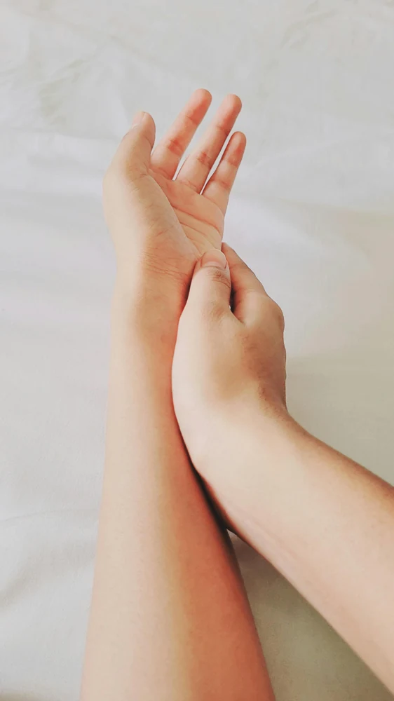
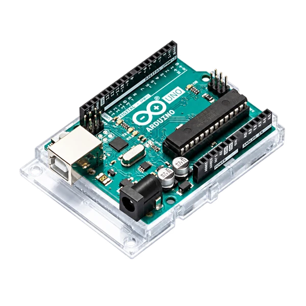
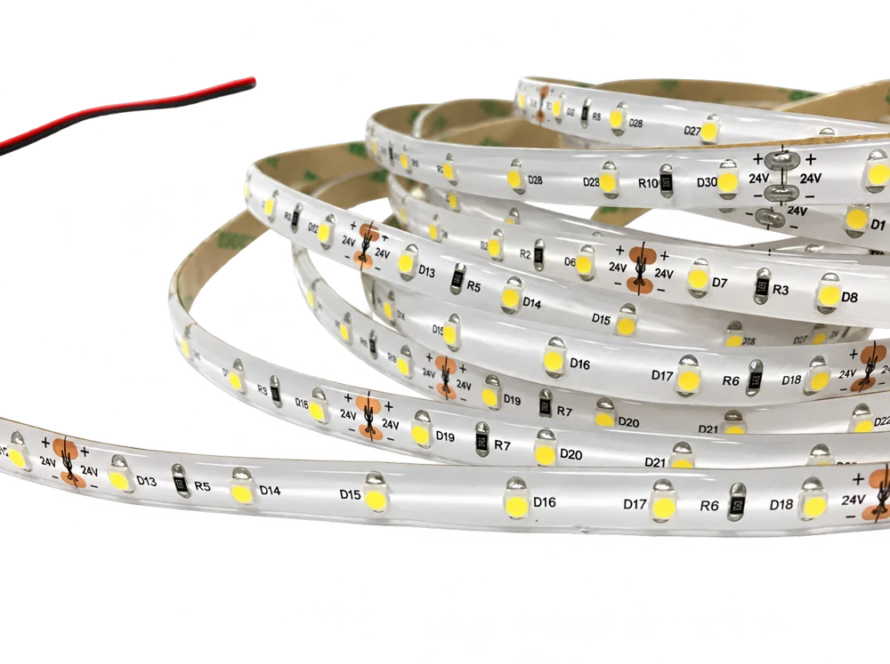
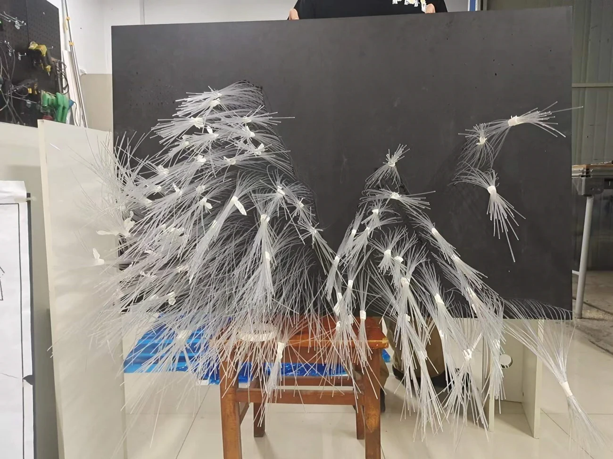
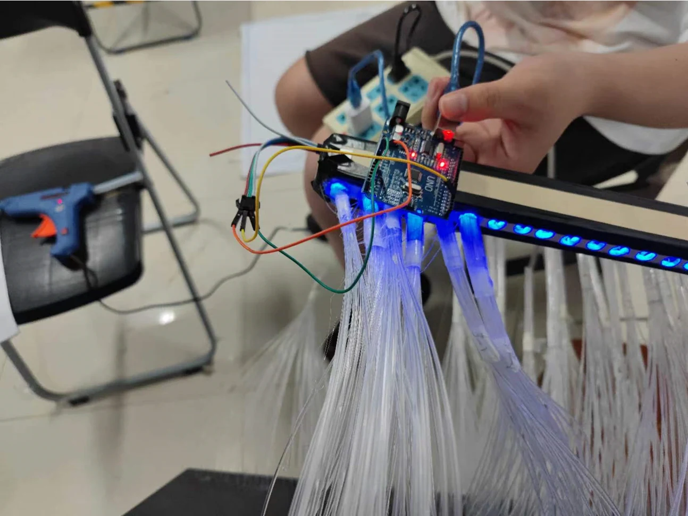

「千里江山图」的现代演绎
我从山形与青绿设色出发，把画面转成两条互动路线：音乐改变光色，触摸点亮局部光纤。
从长卷中拆出山体，重新组织前后层次，再以灯光附着颜色。
从长卷中提取山形，切成独立木板；在层叠结构后布置灯带，让音乐改变山水的光色。
原稿记录了 10 位测试者的颜色选择，作为调性与光色匹配的探索。
// Peak frequency → hue
int hue = map(peakIndex, 0, SAMPLES / 2, 0, 255);
CRGB color = CHSV(hue, 255, 255);
for (int i = 0; i < LED_COUNT; i++) {
leds[i] = color;
}
// Amplitude → brightness
int brightness = map(maxAmplitude, 0, 0.2, 0, 255);
FastLED.setBrightness(brightness);
FastLED.show();
激光切割后按山体分组排列，用丙烯铺底色，再以金粉增强反光。
灯带位置同时服从山形层次与布线路径，通过结构钻孔连接前后线路，再接入 Arduino。
把山形的颜色分区转成点阵，一个点对应一根光纤。触摸传感器控制局部光源，依次点亮周围的光点。

触碰装置表面，激活相应区域。

读取数字信号，控制对应灯组。

光源按区域改变颜色与亮度。

同一区域的光纤接入一组灯珠。

发光端与表面齐平，形成山形点阵。
在背面把光纤分组，接入各自灯箱；木条内侧贴镜，加强光线的传导。
修整正面光纤，让发光端与表面齐平；每个触摸区域对应一组光源。